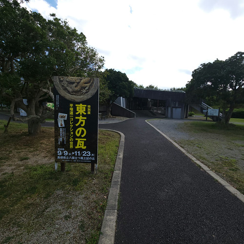
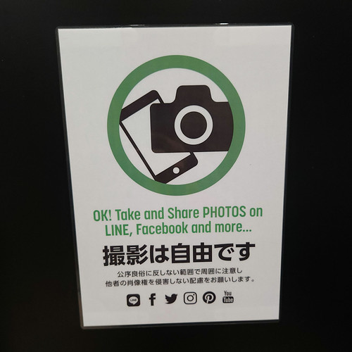
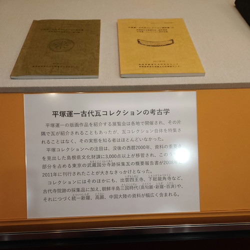
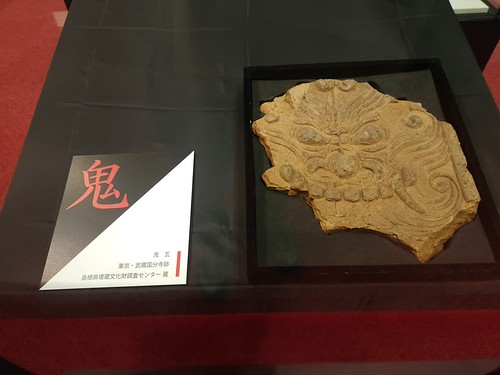
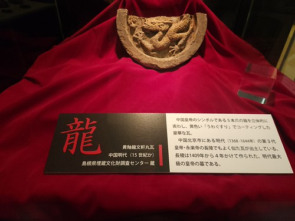
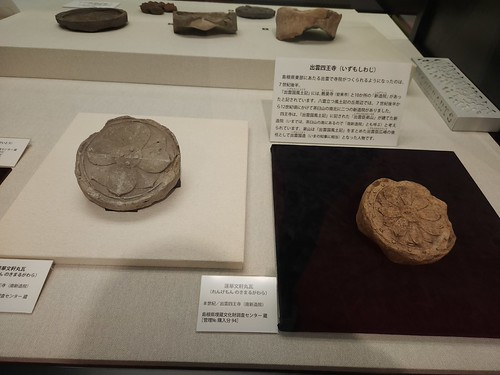
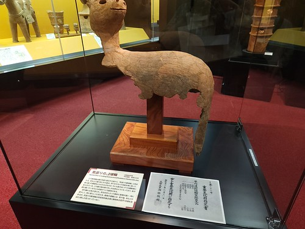
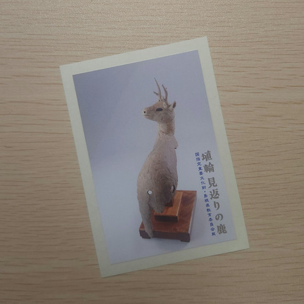
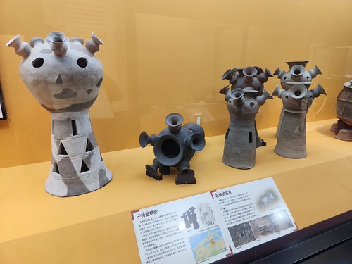
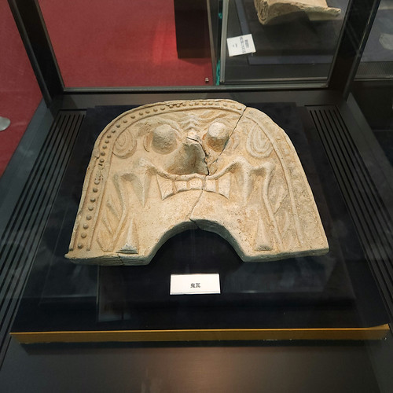

八雲立つ風土記の丘「東方の瓦」展に行ってきた（お散歩カメラ 2026-09-22）

みなさま，シルバーウィークはいかがお過ごしだったでしょうか。 私の弟はお彼岸にもかかわらず仕事だったらしい。 お疲れ様です…
さて休日を利用して，以前から行きたかった風土記の丘の秋季特別展を見に行ってきた。

ちなみに展示学習館は有料エリアも撮影OK，共有OKである。 ありがたや 🙇

では，遠慮なく。
ところで，私は美術には詳しくないのだが，
島根県松江市に生まれる。生家は宮大工。1913(大正2)年松江市で開催された洋画講習会で石井柏亭に出会い、画家を志して上京。版画の才を見抜いた石井の推薦で彫師・伊上凡骨に師事。第3回二科展に版画《出雲のソリコ舟》他が入選。1924年《東京震災跡風景版画集》を出版。1927(昭和2)年版画誌『版』を創刊するなど版画の啓蒙に尽力する一方、創作版画運動のリーダー的存在として活躍した。東京美術学校（現・東京藝術大学）版画科教室の創立時には講師として指導にあたる他、棟方志功や畦地梅太郎ら多くの後進を育てる。1962年渡米。帰国するまでの33年間ワシントンで制作を続け、海外でも数多くの版画講習会を開催した。1989(平成元)年、松江市の名誉市民の称号を授与。1997年、102歳で没。
おー。 めっちゃ偉い先生だった。 氏は古瓦の収集家でもあったそうだが，そのコレクション自体が特集されることはなく，実態はほとんど知られていなかったようだ。

平塚コレクションへの注目は、没後の西暦2000年、資料の重要さを見出した島根県文化財課に3,000点以上が移管され、このうち大部分を占める東京の武蔵国分寺跡採集瓦の概要報告書が2008年と2011年に刊行されたことが大きなきっかけとなった。
コレクションにはそのほかにも、出雲四王寺、下総龍角寺など、古代寺院跡の採集品に加え、朝鮮半島三国時代（高句麗・新羅・百済）や、それにつづく統一新羅、高麗、中國大陸の資料が幅広く含まれる。
では，さっそく展示を見ていこう。 撮った写真を全部載せると大変なことになるので，一部のみ紹介する。

武蔵国分寺跡の鬼瓦だそうな。

龍だ龍！ 15世紀，中国明時代のものらしい。

出雲
山代郷の新造院は意宇平野の北にそびえる茶臼山を挟んで、南北にあります。南側に位 置する四王寺（しわじ）跡は、意宇郡家からの里程からみて、「出雲臣弟山」が造った新造院と考えられます。山代郷の新造院は２つありますので、便宜上、四王寺（しわじ）跡を「南新造院」と呼んでいます。 […] 「弟山」は風土記が作られた１３年後（西暦７４６年）には「出雲国造」に任命され、出雲地方の豪族のトップに立ちました。
常設展示の方も見ていこう。
ここの埴輪の展示が好きなんだよ。 こんなやつ。

しまった。
説明文（&重要文化財指定書）を入れようとして上が見切れてしまった orz でも，大丈夫。
今回の特別展示で行われているクイズを解いてこの埴輪のシール貰ったから。

こっちは出雲地方特有の「出雲型子持壺」って呼ばれているやつ。

これは南新造院跡から出てきた鬼瓦だった筈。 うろ覚えすまん。

他にも色々あったけど，今回はこのくらいで。 来る度に写真を撮りまくってるけど，毎回なにかしら発見があるよなぁ。
このあとは市内に戻って夕方までうだうだしてた。 宍道湖の夕日が撮りたかったんだけど，西側の空が曇ってて撮れなかった。 かわりにちょっと神々しい写真をどうぞ（笑）
秋分の日付近なのでほぼ真西に沈む感じかな。 見れなかったけど。 最近は撮った写真を 16:9 にトリミングして遊んでいる。
今回はここまで。
ブックマーク
参考

- 『松江の神社&その旧社地』 - 今井出版の自費出版
- 合祀・廃社されて自然の中に還り忘れ去られつつある旧社地を記録に『出雲国風土記』や『延喜式』に掲載された神社が数多く残る松江。各地域・地区にも氏神様の社や小さな祠などたくさんの神々が祀られています。
- 評価
[Comment] Web サイト「松江の神社」で公開されている写真と解説を本にまとめたものらしい。小さな祠まで網羅されていて，とても助かっている。地元出版社による自費出版。 Amazon で買えるが，在庫切れかな？
Powered by linkcard

- 古代出雲の氏族と社会 (47) (同成社古代史選書 47)
- 武廣 亮平 (著)
- 同成社 2024-03-11
- 単行本
- 4886219454 (ASIN), 9784886219459 (EAN), 4886219454 (ISBN)
- 評価
[Comment] 「島根の歴史文化講座 2024」で講師をされた武廣亮平さんの著作。興味本位で買うには躊躇するお値段だし地元の県立図書館でも借りれるが，じっくり読みたいので買ってみた。著者の過去の論文を再構成した内容。記紀などの史料や過去の研究者の膨大な文献を整理した上で古代出雲についての考察を行う。